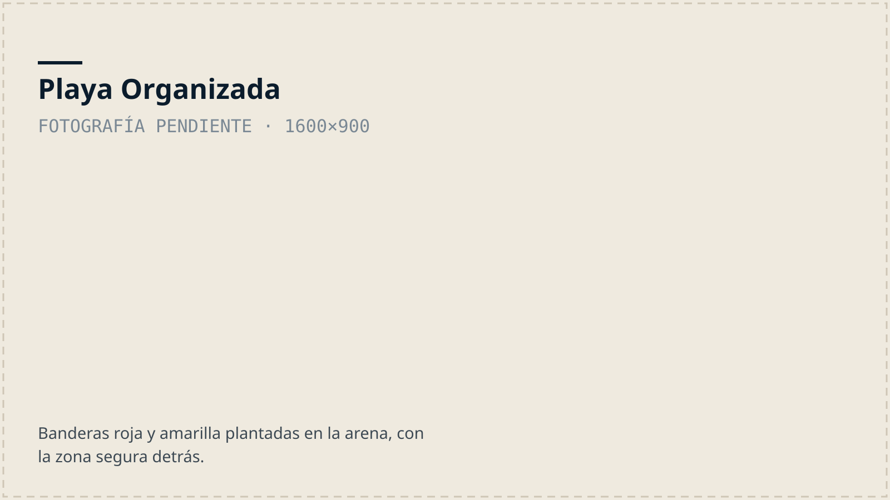
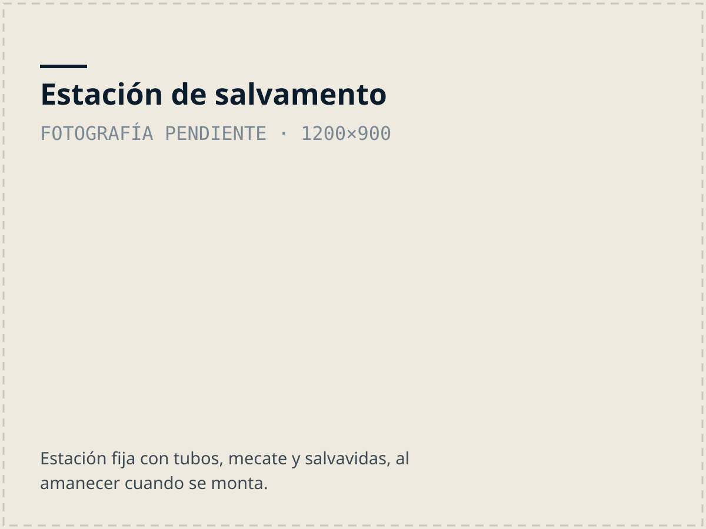
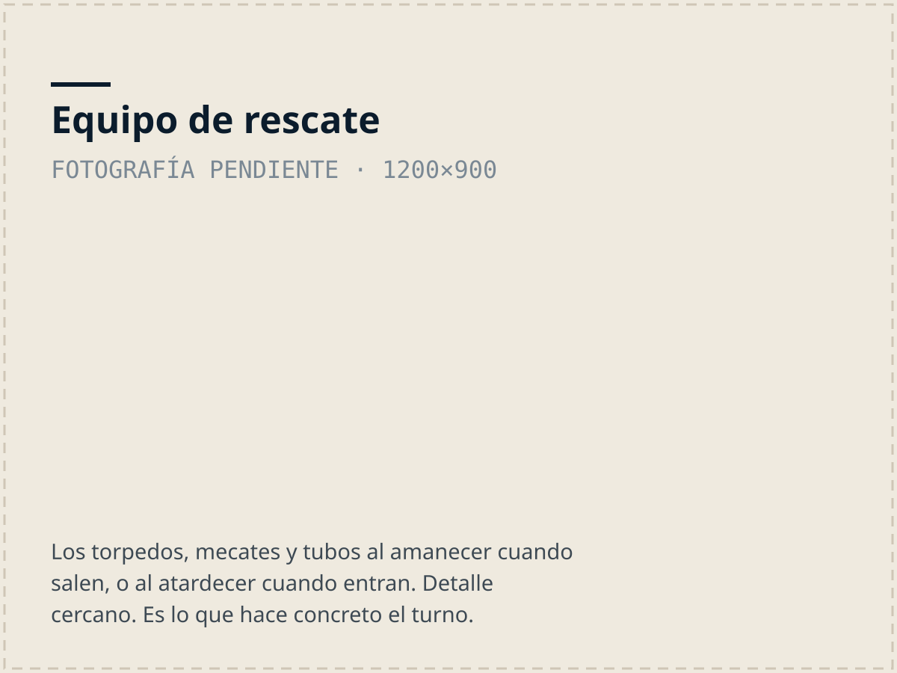
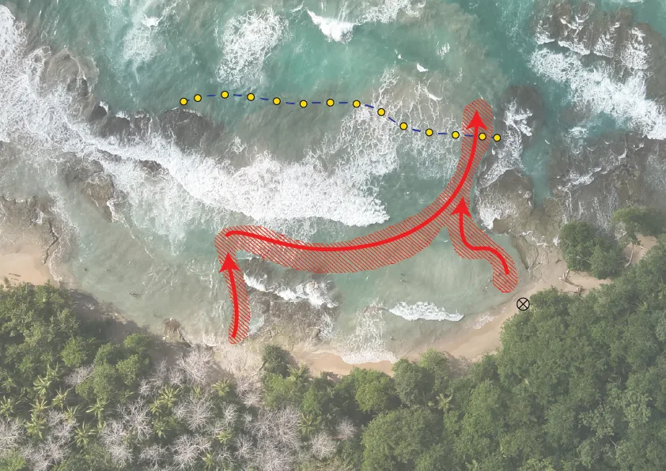

Nuestro programa operativo
Programa Playa Organizada
Banderas, líneas de supervivencia, estaciones de salvamento y un plan de emergencia acordado con los negocios de cada playa. Es el sistema que el mapa de seguridad documenta.

Mapa de Seguridad
Corrientes de resaca, estaciones de salvamento y qué mirar antes de entrar al mar, playa por playa. Ábrelo en el teléfono.
Abrir el mapa →Última revisión: Sin revisar aún. Pregunta a un guardavidas antes de entrar al mar.

Las estaciones
Cada estación guarda tubos de rescate, mecate y salvavidas. El equipo sale al amanecer y entra al atardecer, todos los días.

El equipo
Se financia con donaciones y con el aporte de los negocios de cada playa, y se mantiene entre todos.
El mapa anotado de la zona

Contenido del mapa en texto (9 corrientes, 4 estaciones)
Coordenadas aproximadas, con un margen de unos 75 m. Provienen del mapa anotado por Caribbean Guard y están pendientes de confirmación.
- Corriente de resaca 1: 9.6441, -82.7240 (aprox. 41 m, hacia mar abierto)
- Corriente de resaca 2: 9.6437, -82.7240 (aprox. 32 m, hacia mar abierto)
- Corriente de resaca 3: 9.6453, -82.7180 (aprox. 38 m, hacia mar abierto)
- Corriente de resaca 4: 9.6426, -82.7156 (aprox. 60 m, hacia mar abierto)
- Corriente de resaca 5: 9.6418, -82.7114 (aprox. 31 m, hacia mar abierto)
- Corriente de resaca 6: 9.6420, -82.7112 (aprox. 66 m, hacia mar abierto)
- Corriente de resaca 7: 9.6416, -82.7104 (aprox. 29 m, hacia mar abierto)
- Corriente de resaca 8: 9.6417, -82.7101 (aprox. 38 m, hacia mar abierto)
- Corriente de resaca 9: 9.6404, -82.7080 (aprox. 94 m, hacia mar abierto)
- Estación de salvamento 1: 9.6447, -82.7190
- Estación de salvamento 2: 9.6433, -82.7181
- Estación de salvamento 3: 9.6414, -82.7107
- Estación de salvamento 4: 9.6403, -82.7088

Cómo funciona
Zona segura de bañado
Zona segura de bañado, se delimita con dos banderas —combinada de roja y amarilla— donde inicia y termina la zona más segura para que los bañistas disfruten del mar, con la supervisión de guardavidas.
Línea de supervivencia
Línea de supervivencia, mecate con boyas y anclaje a los lados. Esto va a permitir que cuando una persona es jalada por una corriente de resaca, tenga una última línea de flotación donde agarrarse mientras espera el rescate. Ya se colocó la primera en junio 2024.
Mapeo de la zona
Mapeo de la zona, con dron.
Límites claros del aérea total a organizar con los accesos —peatonales y vehiculares—Marcar los socios locales —todo hotel, aribnb, resta, etc— en el
aérea.
Socios Locales
Dentro de la zona delimitada, se contacta a todos los socios.
Ellos son la única razón de que el proyecto tenga éxito y sostenibilidad. Ellos ayudan a financiar, se comprometen con el equipo: sacarlo y meterlo todos los días. Solo esta acción de 10 – 15 minutos salva vidas.
Se comprometen a capacitar parte del personal como guardavidas y prestadores de RCP y primeros auxilios.
Estaciones de Salvamento.
Estructuras fijas, en la playa con implementos de flotación para rescate: tubos y torpedos de rescate, caja de mecate (200metrs), salvavidas, chaleco y silbato. Compromiso con socios locales de poner y sacar cada día los implementos —al amanecer y atardecer—. Esto permite que si una persona es arrastrada por el mar, cualquier persona que este cerca tenga elementos de emergencia y flotación para el rescate.
Plan de Emergencia
Plan de emergencia/ grupo de emergencia rápida.
Plan de emergencia con los socios locales, para toda eventualidad.
Plan se activa con el silbato u otro llamado.
Se activa el protocolo para 911 y para que socorristas acudan a la emergencia.
EDS, mecates fijos y DEA en la zona.
Puntos de ingreso y extracción, etc.
Curso de guardavidas, RCP y primeros auxilios
Curso de guardavidas, RCP y primeros auxilios para empleados de los hoteles y negocios de la zona.
Es fundamental que todos los negocios tengan algunos (3-4) personas certificadas en RCP y primeros auxilios y 1 o 2 de guardavidas. Ya que si hay una emergencia (un ahogado en el mar o electrocutado en el hotel) siempre van a saber cómo reaccionar para que la víctima tenga más posibilidades de sobrevivir hasta que llegue la ambulancia.